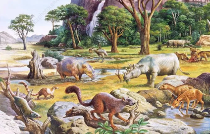
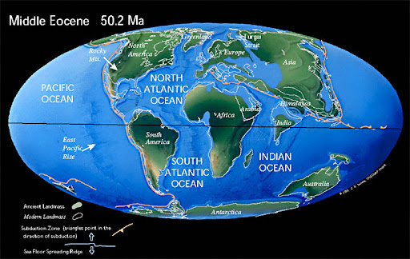

Paleogene Period (66 – 23 million years ago)
The Paleogene Period marks the beginning of the Cenozoic Era and is divided into the Paleocene, Eocene, and Oligocene epochs. The start of this period included the last mass extinction, the Cretaceous-Paleogene Extinction which killed the dinosaurs.
Life Forms during this Period
In this period, the first primates appear and there is a rapid diversification of mammals and birds.

Geological Features during this Period
This period was very warm as much of the Earth was tropical or sub-tropical. The continents drift to their current positions and major mountain ranges form.
